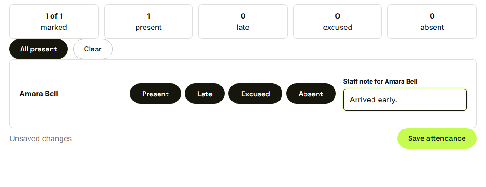
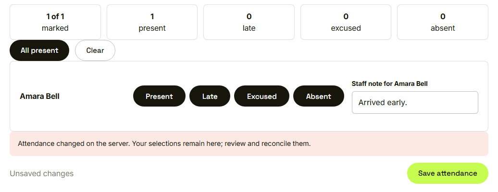

Waypoint · Video 108
Protecting against overwritten work
A stale save is refused, never silently merged
Marked, not yet saved

Unsaved changes on Grace's page
The save is refused

Her selections remain; review and reconcile them
Check at the moment of saving
No record is locked while someone looks at it
A stale save is refused with a plain message
A successful save moves the version marker forward
Things to remember
Two people can edit one record; neither silently erases the other
A stale save is refused with a plain message
Your own work stays on screen so you can reconcile
Offline attendance asks which version to keep